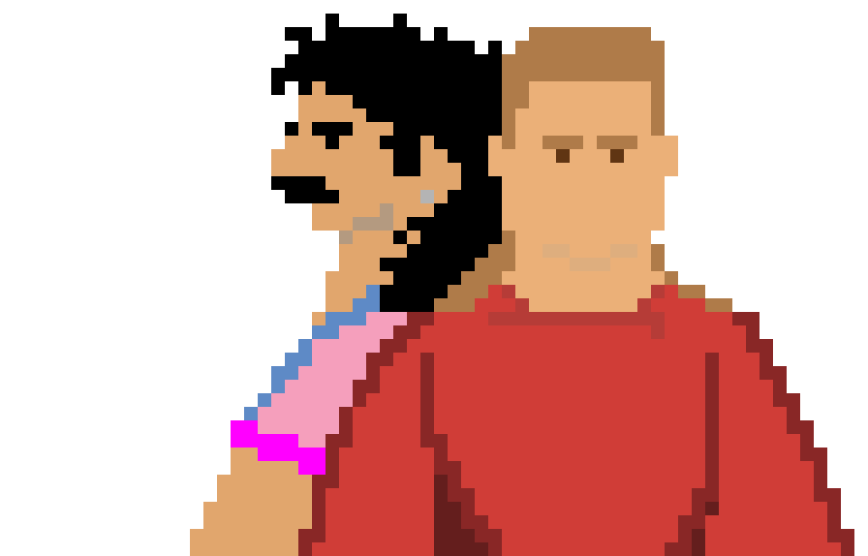

UI Preview

This preview updates in real time based on your selected colors.
Interactive Preview
Try different color combinations and see how they affect readability.
Fast, accessible color contrast tool (WCAG 2.1)

This preview updates in real time based on your selected colors.
Try different color combinations and see how they affect readability.